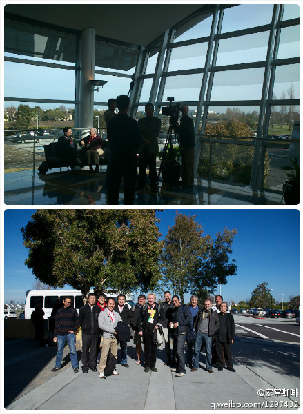
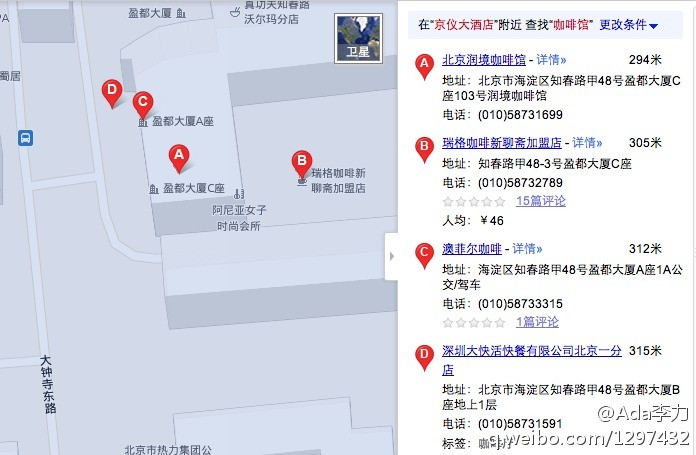

五月份上海的活动也会有同样的视频吧?//@ben_杜玉杰:cool!//@程勇-PeterCheng:Community Leader Summit@家常咖啡:今年旧金山全球Oracle User Group Leader会议中对来自中国的三位社区领导人的采访视频：网页链接 。 这是在此国际会议上国人第一次用中文介绍自己的社区。 @M-Parfait, @程勇-PeterCheng, @cleverpig, @diamondtintin 
示例代码或DEMO通常是由原厂商的技术人员撰写，和API和库等一起发布。比较复杂些的demo通常是由专职Envangelist些。对新技术推广来说，教会开发者如何使用，没有比例子更好的教材了。这方面可借鉴Java的经验。@多线程:请教个问题。对于在开发者社区中给出示例代码或DEMO各位有没有经验？这些内容如何产生，会否受到开发者欢迎呢？
这周QCon北京大会在京仪大酒店举行，4月18日- 4月20日，咱们群里有不少人会参加这个会，包括外地的朋友。4月20日周五晚聚会如何？地点定在京仪大酒店附近的咖啡馆，下午六点开始。附近盈都大厦里有三个咖啡馆，有经验的能否给个建议。@霍泰稳 
 网页链接 。 这是在此国际会议上国人第一次用中文介绍自己的社区。 @M-Parfait, @程勇-PeterCheng, @cleverpig, @diamondtintin
网页链接 。 这是在此国际会议上国人第一次用中文介绍自己的社区。 @M-Parfait, @程勇-PeterCheng, @cleverpig, @diamondtintin